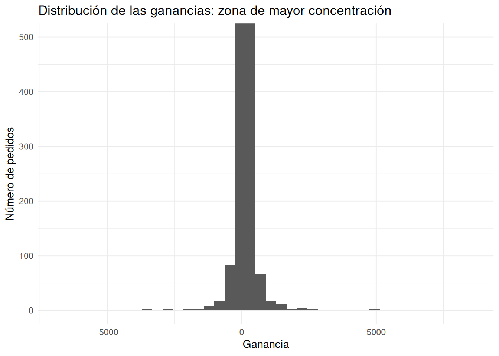
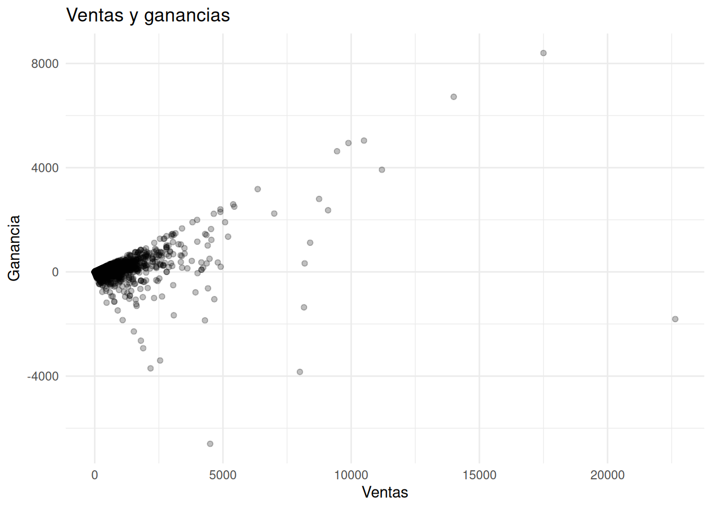
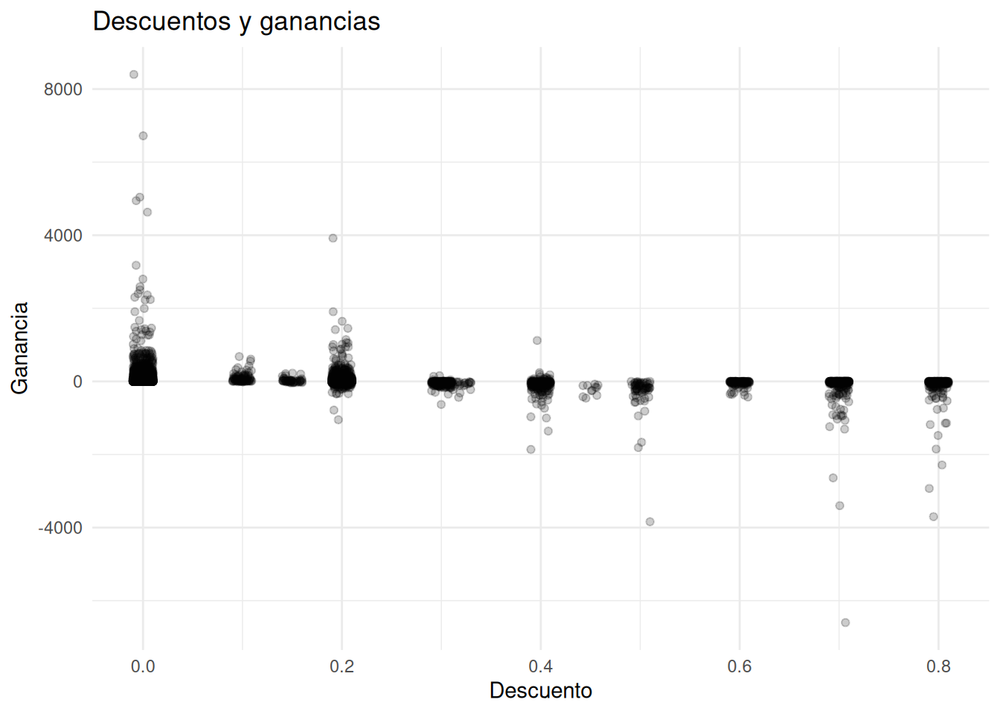
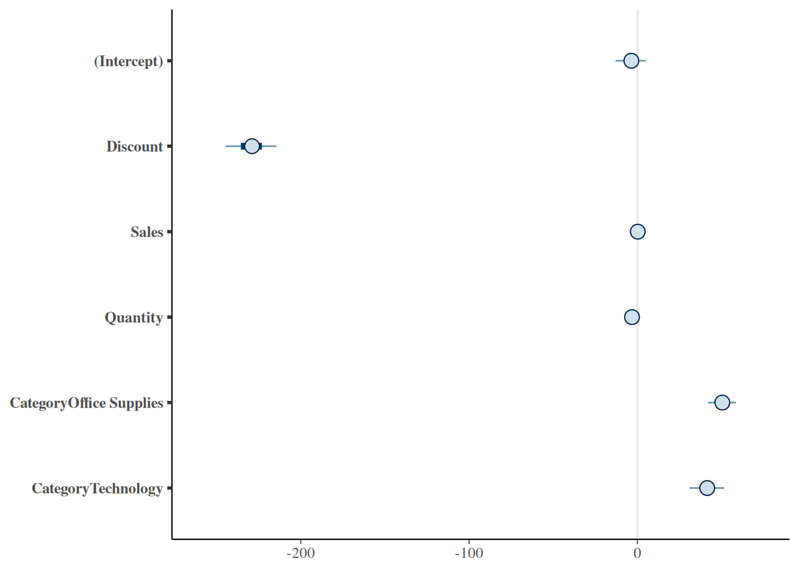
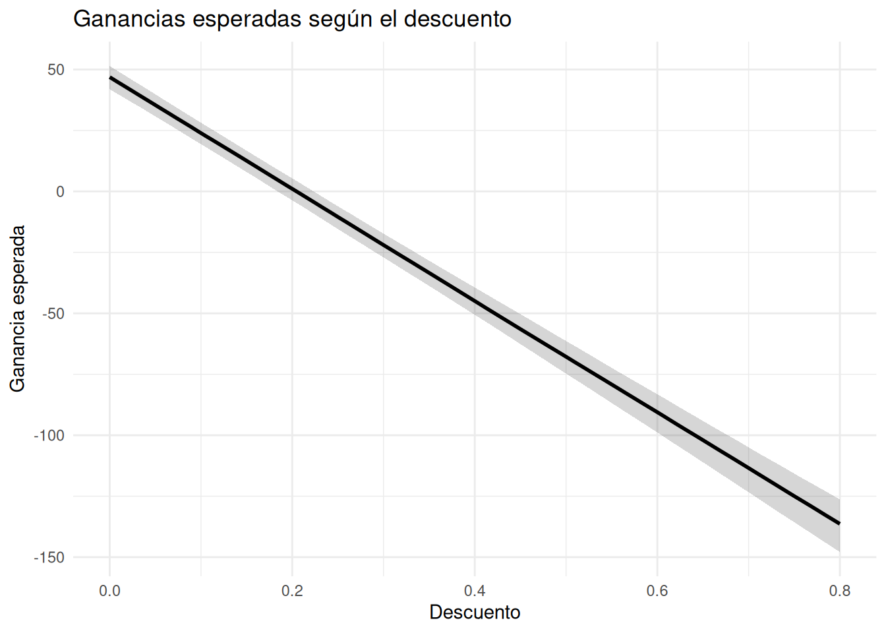

¿Qué factores parecen explicar las ganancias?
Retail
Finanzas
Un modelo bayesiano con Superstore permite explorar cómo descuento, ventas, cantidad y categoría se asocian con la rentabilidad.
La pregunta de negocio
En una empresa podemos observar que algunos pedidos generan buenas ganancias, mientras otros apenas son rentables o incluso producen pérdidas.
Pero después de describir lo que está ocurriendo aparece una pregunta más interesante:
¿Qué factores parecen estar asociados con las ganancias?
Esta pregunta cambia la forma de mirar los datos.
Ya no queremos observar solamente si las ganancias aumentan o disminuyen. Queremos analizar varias variables simultáneamente para entender qué asociaciones aparecen cuando tenemos en cuenta el resto de la información disponible.
Para explorar esta pregunta utilizaremos el dataset Superstore Sales y construiremos un modelo de regresión lineal bayesiana.
El objetivo no será encontrar una fórmula perfecta para explicar la rentabilidad.
Será algo más útil:
identificar qué relaciones parecen importantes y qué incertidumbre permanece alrededor de ellas.
Comprendiendo el problema
En este análisis nos concentraremos en cuatro variables que podrían estar relacionadas con Profit:
Discount: porcentaje de descuento aplicado al pedido.Sales: valor monetario de las ventas.Quantity: cantidad de productos incluidos.Category: categoría del pedido.
Nuestra variable de interés será Profit, la ganancia total del pedido.
Esto es importante porque los coeficientes que obtengamos estarán expresados en relación con esa variable.
Por ejemplo, si un coeficiente es -3.2, no significa necesariamente que cada producto cueste $3.2. Significa que, bajo las condiciones del modelo, un aumento de una unidad en la variable correspondiente está asociado con un cambio promedio de aproximadamente $3.2 en la ganancia del pedido.
Antes de construir el modelo, observemos cómo se distribuyen las ganancias y cómo se relacionan visualmente con algunas de estas variables.
Explorando los datos
¿Cómo se distribuyen las ganancias?
Primero observemos la distribución completa de Profit.
La distribución está fuertemente concentrada alrededor de valores relativamente pequeños de ganancia, pero también aparecen algunos pedidos con ganancias o pérdidas mucho mayores.
Para observar mejor la zona donde se concentra la mayor parte de los pedidos podemos hacer zoom.

La mayor concentración de pedidos se encuentra alrededor de ganancias relativamente cercanas a cero. Los pedidos con pérdidas o ganancias superiores a unos pocos miles de dólares son mucho menos frecuentes y quedan visualmente alejados de la masa principal de observaciones.
Esto nos dice algo importante antes de modelar:
la rentabilidad de los pedidos presenta una variabilidad considerable.
Por tanto, cuando construyamos el modelo no solamente nos interesará conocer una estimación central. También necesitaremos conocer la incertidumbre alrededor de esa estimación.
¿Cómo se relacionan las ventas y las ganancias?
Una primera hipótesis razonable es que los pedidos con mayores ventas podrían generar mayores ganancias.

Existe una relación positiva visible: a medida que aumentan las ventas, también aparecen pedidos con mayores niveles de ganancia.
Pero la relación no es perfecta.
Para niveles similares de ventas encontramos pedidos con ganancias muy diferentes e incluso con pérdidas.
Esto es precisamente lo que hace interesante el problema.
Las ventas parecen importar, pero no explican por sí solas la rentabilidad.
¿Qué ocurre con el descuento?
El descuento merece especial atención porque representa una decisión comercial que puede modificarse directamente.

La nube de puntos sugiere una relación negativa.
Con descuentos bajos aparecen pedidos con diferentes niveles de rentabilidad. A medida que el descuento aumenta, se vuelve más frecuente encontrar pedidos con ganancias pequeñas o negativas.
La relación parece especialmente clara en los niveles altos de descuento.
Pero este gráfico todavía tiene una limitación importante:
no nos permite separar el efecto asociado al descuento de otras características del pedido.
Un pedido con un descuento elevado también puede tener unas ventas determinadas, una cantidad concreta de productos y pertenecer a una categoría específica.
Necesitamos considerar estas variables simultáneamente.
Construyendo el modelo
Para ello utilizaremos una regresión lineal bayesiana:
La pregunta que intenta responder el modelo es:
¿Cómo se asocia cada variable con Profit cuando las demás variables del modelo se mantienen constantes?
Esta última parte es fundamental.
El modelo no está diciendo simplemente que “las ventas producen ganancias” o que “el descuento produce pérdidas”.
Está realizando comparaciones condicionadas.
Por ejemplo, para interpretar Discount, imaginamos pedidos similares en ventas, cantidad y categoría, pero con diferentes niveles de descuento.
Para interpretar Quantity, imaginamos pedidos similares en ventas, descuento y categoría, pero con diferente cantidad de productos.
Y para interpretar Category, comparamos pedidos similares en las variables numéricas, pero pertenecientes a categorías diferentes.
Interpretando los resultados
¿Qué aprendimos del modelo?
Los resultados centrales son:
| Variable | Media posterior | Desv. estándar |
|---|---|---|
| (Intercept) | −3.81 | 5.50 |
| Discount | −229.30 | 9.11 |
| Sales | 0.18 | 0.00 |
| Quantity | −3.23 | 0.89 |
| CategoryOffice Supplies | 50.25 | 5.07 |
| CategoryTechnology | 41.39 | 6.21 |
| sigma | 198.74 | 1.35 |
| mean_PPD | 28.58 | 2.78 |
| log-posterior | −67,087.46 | 1.75 |
Hay cinco resultados especialmente importantes.
Descuento
El coeficiente de Discount es aproximadamente −229.30.
Como Discount está expresado como una proporción, pasar de 0 a 1 representa un aumento de 100 puntos porcentuales.
Por tanto, manteniendo constantes Sales, Quantity y Category, un aumento de 100 puntos porcentuales en el descuento está asociado con aproximadamente $229 menos de Profit.
Una forma mucho más útil de expresarlo es dividir ese cambio entre diez:
Cada 10 puntos porcentuales adicionales de descuento están asociados con aproximadamente $22.9 menos de ganancia por pedido, manteniendo constantes las demás variables del modelo.
Esto no significa que cada producto pierda $22.9.
Tampoco significa que el modelo haya demostrado que aumentar el descuento causa exactamente esa pérdida.
Es una asociación entre el nivel de descuento y la ganancia total del pedido, condicionada por las otras variables incluidas en el modelo.
Ventas
El coeficiente de Sales es aproximadamente 0.185.
Esto indica que, manteniendo constantes Discount, Quantity y Category, un aumento de un dólar en Sales está asociado con un aumento promedio de aproximadamente $0.185 en Profit.
Es tentador convertir este número directamente en un “margen de utilidad del 18.5%”.
Sin embargo, esa interpretación sería demasiado fuerte.
El coeficiente representa una asociación parcial dentro de este modelo, no necesariamente el margen contable de la empresa.
Por ejemplo, no debemos afirmar que la empresa tiene un margen de utilidad del 18.5% simplemente porque el coeficiente de Sales sea 0.185.
Quantity
El coeficiente de Quantity es aproximadamente −3.23.
La interpretación es:
Manteniendo constantes
Sales,DiscountyCategory, una unidad adicional deQuantityestá asociada con aproximadamente $3.23 menos de Profit por pedido.
Esto puede resultar poco intuitivo.
No significa que vender una unidad adicional tenga automáticamente un costo de $3.23.
El modelo está comparando pedidos que tienen el mismo nivel de ventas y las mismas características consideradas por el modelo.
Por eso, la interpretación debe hacerse como una asociación parcial.
Category
Aquí aparece una característica importante de las variables categóricas.
Furniture es la categoría de referencia. Por eso no aparece como coeficiente independiente.
Los resultados son:
Office Supplies: aproximadamente +$50.25 frente a Furniture.Technology: aproximadamente +$41.39 frente a Furniture.
Por tanto, manteniendo constantes Discount, Sales y Quantity, un pedido de Office Supplies está asociado con aproximadamente $50.25 más de Profit que un pedido equivalente de Furniture.
En Technology, la diferencia asociada es de aproximadamente $41.39 frente a Furniture.
Estos valores tampoco representan una ganancia adicional por unidad de producto.
Representan una diferencia asociada con la categoría del pedido, manteniendo constantes las demás variables del modelo.
¿Cuánta incertidumbre existe?
Una estimación puntual nunca cuenta toda la historia.
Para conocer qué valores de los parámetros son compatibles con nuestra inferencia posterior, calculamos intervalos de credibilidad del 95%.
| Variable | Variable | Límite inferior | Límite superior |
|---|---|---|---|
| 1 | (Intercept) | −14.59 | 6.90 |
| 2 | Discount | −247.09 | −212.42 |
| 3 | Sales | 0.18 | 0.19 |
| 4 | Quantity | −4.95 | −1.47 |
| 5 | CategoryOffice Supplies | 39.71 | 59.66 |
| 6 | CategoryTechnology | 29.17 | 53.53 |
| 7 | sigma | 196.26 | 201.44 |
Estos intervalos son intervalos de credibilidad posteriores del 95% para los parámetros del modelo.
No significan que el 95% de los pedidos futuros tenga que encontrarse dentro de esos límites.
Tampoco significan que el 95% de la población esté dentro de ellos.
Lo que expresan es nuestra incertidumbre posterior acerca de cada parámetro.
Los resultados son especialmente interesantes para cuatro variables.
Discount
El intervalo va aproximadamente de −247.09 a −212.42.
Incluso considerando la incertidumbre del modelo, los valores plausibles del coeficiente siguen siendo negativos.
Traducido a 10 puntos porcentuales de descuento:
La asociación compatible con el modelo está aproximadamente entre $21.2 y $24.7 menos de Profit por pedido.
Sales
El intervalo va aproximadamente de 0.178 a 0.191.
La asociación estimada es positiva y el intervalo se encuentra muy próximo al valor central de 0.185.
Esto respalda la idea de que, dentro de este modelo, mayores ventas están asociadas con mayores ganancias.
Pero nuevamente:
no debemos convertir automáticamente este coeficiente en un margen de utilidad.
Quantity
El intervalo va aproximadamente de −4.95 a −1.47.
Todo el intervalo se encuentra por debajo de cero.
La evidencia posterior es, por tanto, compatible con una asociación negativa entre Quantity y Profit, manteniendo constantes las demás variables.
En términos prácticos, el modelo sitúa esa asociación aproximadamente entre $1.47 y $4.95 menos de Profit por unidad adicional, dependiendo del valor del parámetro considerado plausible.
Category
Para Office Supplies, el intervalo va aproximadamente de $39.71 a $59.66.
Para Technology, va aproximadamente de $29.17 a $53.53.
En ambos casos los intervalos están por encima de cero.
Esto indica que, dentro de las condiciones del modelo, ambas categorías presentan una asociación positiva con Profit respecto a Furniture.
Visualizando la incertidumbre
Una tabla permite conocer los valores, pero un gráfico facilita comparar rápidamente la magnitud y dirección de las asociaciones.

La visualización permite observar inmediatamente que Discount presenta una asociación claramente negativa, mientras que Sales presenta una asociación positiva pequeña.
Quantity también presenta una asociación negativa, aunque de una magnitud mucho menor que la de Discount cuando las variables se encuentran en sus escalas originales.
Las dos categorías adicionales muestran asociaciones positivas respecto a Furniture.
Más importante aún, el gráfico permite observar que la incertidumbre no es igual para todas las variables.
El objetivo de un análisis bayesiano no es esconder esa incertidumbre detrás de un único número.
Es hacerla visible.
¿Qué ocurre si aumentamos el descuento?
Hasta ahora hemos estudiado los coeficientes individualmente.
Pero una pregunta empresarial puede ser mucho más concreta:
¿Cómo cambia la ganancia esperada cuando aumentamos el descuento?
Para responderla podemos construir una serie de pedidos hipotéticos.
Mantendremos constantes las otras variables:
Sales = $54.50, la mediana observada;Quantity = 3, la mediana observada;Category = Office Supplies.
Lo único que cambiaremos será Discount.
Ahora podemos visualizar las ganancias esperadas.

La relación es clara.
Para este pedido hipotético —con ventas de $54.50, tres unidades y categoría Office Supplies— la ganancia esperada disminuye de forma aproximadamente lineal a medida que aumenta el descuento.
Con 0% de descuento, la ganancia esperada se encuentra alrededor de $77.
Alrededor del 20% de descuento, la ganancia esperada se sitúa aproximadamente en $31.
Con descuentos cercanos al 50%, la ganancia esperada pasa a terreno negativo.
Y alrededor del 80%, la pérdida esperada se encuentra aproximadamente en $107.
La banda alrededor de la línea representa la incertidumbre posterior de estas ganancias esperadas.
En este caso hemos utilizado los cuantiles 5% y 95%, por lo que se trata de un intervalo posterior del 90%.
La banda permanece relativamente estrecha porque estamos propagando principalmente la incertidumbre de los parámetros del modelo mediante posterior_epred().
No estamos representando aquí toda la variabilidad que tendría un pedido individual.
¿Qué haría un analista con esta información?
Este análisis no debería terminar con una tabla de coeficientes.
La pregunta importante es qué podemos hacer con la evidencia.
1. Revisar los descuentos elevados
La asociación negativa entre Discount y Profit es una de las señales más claras del modelo.
Los descuentos elevados parecen estar asociados con una reducción importante de la rentabilidad.
Esto no significa que debamos eliminar los descuentos.
Significa que los descuentos altos deberían analizarse como una decisión que necesita justificación económica.
2. No evaluar una promoción solamente por sus ventas
Una promoción puede aumentar las ventas y, al mismo tiempo, reducir la rentabilidad.
Nuestro modelo muestra precisamente por qué observar Sales de forma aislada puede resultar insuficiente.
La pregunta empresarial no debería ser solamente:
“¿Cuánto vendimos?”
También debería ser:
“¿Qué nivel de ganancia quedó después de vender?”
3. Investigar las diferencias entre categorías
El modelo encuentra asociaciones positivas de Office Supplies y Technology respecto a Furniture.
Esto puede ser una señal para investigar con mayor profundidad las diferencias de rentabilidad entre categorías.
Sin embargo, no deberíamos convertir inmediatamente esta asociación en una política comercial.
Podrían existir otras variables no incluidas en el modelo que expliquen parte de estas diferencias.
4. Utilizar escenarios, no únicamente coeficientes
El gráfico de predicciones resulta especialmente útil para la toma de decisiones porque transforma un coeficiente abstracto como −229 en una pregunta empresarial más comprensible:
“¿Qué ganancia esperaríamos para un pedido típico si aumentamos el descuento?”
Esta forma de comunicar los resultados suele ser mucho más útil para una persona que necesita tomar decisiones que una lista de coeficientes.
Limitaciones
Este modelo representa una primera aproximación.
Incluye cuatro variables explicativas, pero la rentabilidad de un pedido puede depender de muchos otros factores.
Por ejemplo, podrían existir diferencias relacionadas con productos específicos, clientes, regiones, fechas, costos, promociones o características que no hemos incorporado.
Además, estamos estudiando asociaciones observadas en los datos.
Por ello, no podemos afirmar que el modelo haya demostrado que aumentar el descuento cause exactamente una reducción determinada de Profit.
La interpretación debe mantenerse en términos de asociaciones compatibles con los datos y con la estructura del modelo.
También debemos recordar que la predicción que mostramos corresponde a un escenario hipotético específico:
Sales = $54.50, Quantity = 3 y Category = Office Supplies.
Cambiar esas condiciones produciría otras ganancias esperadas.
Reflexión bayesiana
Este análisis nos permite dar un paso más allá de la simple descripción de los datos.
Primero observamos que los pedidos presentan una rentabilidad muy variable.
Después encontramos asociaciones entre esa rentabilidad y variables como ventas, descuento, cantidad y categoría.
Finalmente transformamos esas asociaciones en escenarios que pueden ser más fáciles de interpretar desde el punto de vista empresarial.
Pero el modelo no elimina la incertidumbre.
Tampoco convierte asociaciones en certezas causales.
Lo que hace es ayudarnos a organizar la evidencia y expresar qué relaciones parecen plausibles, qué magnitudes son compatibles con los datos y qué incertidumbre todavía permanece.
Esa es una de las principales ventajas del pensamiento bayesiano aplicado al negocio:
No necesitamos fingir que conocemos exactamente el futuro para tomar mejores decisiones. Necesitamos entender qué escenarios son plausibles y cuánta incertidumbre existe alrededor de ellos.
Apéndice — Código completo
A continuación se presenta el código completo utilizado durante el análisis, en el mismo orden en que aparece en el artículo.
# ============================================================
# 0. Cargar las librerías
# ============================================================
options(scipen = 999)
library(tidyverse)
library(rstanarm)
library(ggplot2)
library(bayesplot)
library(posterior)
library(gt)
library(dplyr)
# ============================================================
# 1. Cargar los datos
# ============================================================
superstore <- read_csv(
"blog_ba/data/superstore_sales.csv",
guess_max = 10000,
show_col_types = FALSE
)
# ============================================================
# 2. Distribución de las ganancias
# ============================================================
ggplot(
superstore,
aes(x = Profit)
) +
geom_histogram(
bins = 40
) +
labs(
title = "Distribución de las ganancias",
x = "Ganancia",
y = "Número de pedidos"
) +
theme_minimal()
ggplot(
superstore,
aes(x = Profit)
) +
geom_histogram(
bins = 40
) +
coord_cartesian(
ylim = c(0, 500)
) +
labs(
title = "Distribución de las ganancias: zona de mayor concentración",
x = "Ganancia",
y = "Número de pedidos"
) +
theme_minimal()
# ============================================================
# 3. Ventas y ganancias
# ============================================================
ggplot(
superstore,
aes(
x = Sales,
y = Profit
)
) +
geom_point(
alpha = 0.25
) +
labs(
title = "Ventas y ganancias",
x = "Ventas",
y = "Ganancia"
) +
theme_minimal()
ggplot(
superstore,
aes(
x = Sales,
y = Profit
)
) +
geom_point(
alpha = 0.25
) +
coord_cartesian(
ylim = c(-2000, 2000)
) +
labs(
title = "Ventas y ganancias: zona de mayor concentración",
x = "Ventas",
y = "Ganancia"
) +
theme_minimal()
# ============================================================
# 4. Descuento y ganancias
# ============================================================
ggplot(
superstore,
aes(
x = Discount,
y = Profit
)
) +
geom_jitter(
alpha = 0.20,
width = 0.01
) +
labs(
title = "Descuentos y ganancias",
x = "Descuento",
y = "Ganancia"
) +
theme_minimal()
# ============================================================
# 5. Preparar Category
# ============================================================
superstore <- superstore |>
mutate(
Category = factor(Category)
)
# ============================================================
# 6. Modelo bayesiano
# ============================================================
modelo_profit <- stan_glm(
Profit ~ Discount + Sales + Quantity + Category,
data = superstore,
family = gaussian(),
chains = 2,
iter = 1000,
seed = 1234,
refresh = 0
)
modelo_profit
# ============================================================
# 7. Resumen del modelo
# ============================================================
summary(modelo_profit)
coeficientes <- as.data.frame(summary(modelo_profit)) |>
tibble::rownames_to_column("Variable") |>
rename(
Media = mean,
SD = sd
)
coeficientes
coeficientes |>
select(
Variable,
Media,
SD
) |>
gt() |>
fmt_number(
columns = c(Media, SD),
decimals = 2
) |>
cols_label(
Variable = "Variable",
Media = "Media posterior",
SD = "Desv. estándar"
)
# ============================================================
# 8. Intervalos posteriores
# ============================================================
intervalos <- posterior_interval(
modelo_profit,
prob = 0.95
)
intervalos
intervalos <-
as.data.frame(intervalos) |>
tibble::rownames_to_column("Variables") |>
rename(
LI = `2.5%`,
LS = `97.5%`
)
intervalos
intervalos |>
gt() |>
fmt_number(
columns = c(LI, LS),
decimals = 2
) |>
cols_label(
Variables = "Variable",
LI = "Límite inferior",
LS = "Límite superior"
)
# ============================================================
# 9. Gráfico de intervalos posteriores
# ============================================================
bayesplot::mcmc_intervals(
as.matrix(modelo_profit),
pars = c(
"(Intercept)",
"Discount",
"Sales",
"Quantity",
"CategoryOffice Supplies",
"CategoryTechnology"
)
)
# ============================================================
# 10. Crear escenarios para Discount
# ============================================================
newdata <- tibble(
Discount = seq(
min(superstore$Discount),
max(superstore$Discount),
length.out = 100
),
Sales = median(superstore$Sales),
Quantity = median(superstore$Quantity),
Category = factor(
"Office Supplies",
levels = levels(superstore$Category)
)
)
# ============================================================
# 11. Predicciones posteriores
# ============================================================
predicciones <-
posterior_epred(
modelo_profit,
newdata = newdata
)
# ============================================================
# 12. Resumir las predicciones
# ============================================================
newdata$media <- apply(
predicciones,
2,
median
)
newdata$li <- apply(
predicciones,
2,
quantile,
probs = 0.05
)
newdata$ls <- apply(
predicciones,
2,
quantile,
probs = 0.95
)
# ============================================================
# 13. Gráfico de ganancias esperadas
# ============================================================
ggplot(
newdata,
aes(
x = Discount,
y = media
)
) +
geom_ribbon(
aes(
ymin = li,
ymax = ls
),
alpha = 0.20
) +
geom_line(
linewidth = 1
) +
labs(
title = "Ganancias esperadas según el descuento",
x = "Descuento",
y = "Ganancia esperada"
) +
theme_minimal()Cierre
Esta entrada da un paso importante respecto a las anteriores: ya no solamente describimos qué está ocurriendo en Superstore; comenzamos a preguntar qué variables están asociadas con lo que observamos.
Y, sobre todo, lo hacemos sin convertir el modelo en el protagonista.
El protagonista sigue siendo la decisión empresarial: cómo entender mejor la rentabilidad y qué información deberíamos considerar antes de modificar descuentos, evaluar categorías o interpretar el crecimiento de las ventas.